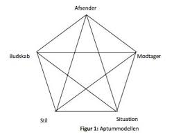
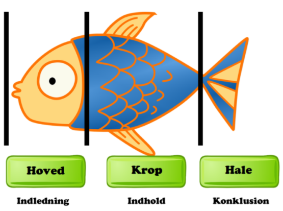
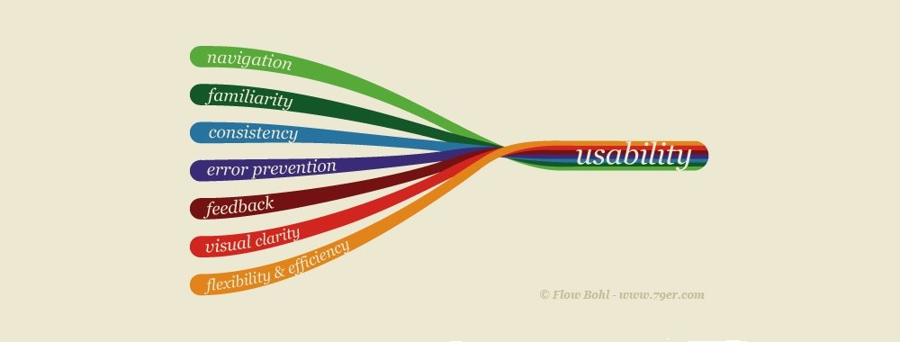
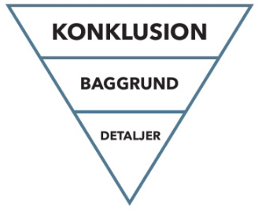
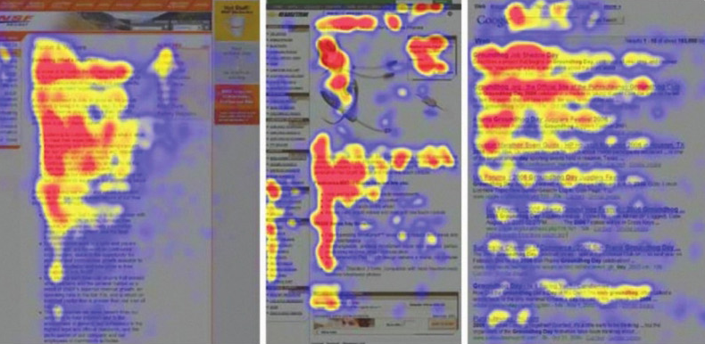
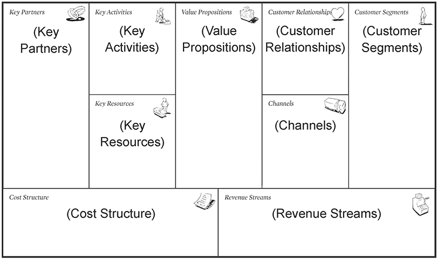

GRUNDLÆGGENDE KOMMUNIKATION
Kommunikation er noget vi alle bruger på daglig basis og nærmest hele tiden. man kan enten bruge sine ord og udtrykke sig på forskellige måder i form af udtale, toneleje og meget andet. I kommunikation betyder kropssprog og hvordan man generelt bærer sig selv når man kommunikere med ord. Vi kan læse kropssprog så nemt at vi godt ville kunne forstå ens persons holdning til ting, se forskel på reaktion og vurdere folk, ved at analysere deres kropssprog, så hvorfor ikke også få brug af det når man skal præsentere eller tale foran publikum eller kunder.
Der er 5 grundantagelser om kommunikation:
1. Man kan ikke ikke-kommunikere
2. Enhver kommunikation består af to dele: selve indholdet og oplysninger om det indbyrdes forhold, der er mellem dem, der kommunikerer.
3. Den måde, vi udtrykker os på, og den måde, vi tolker hinandens kommunikation på, afhænger også af det forhold vi har til hinanden.
4. Mennesker kommunikerer både med en digital kode og en analog kode (digital kode = ord der siges, analog kode = hvordan det siges, kropssprog osv.)
5. Kommunikationsudveksling er enten symmetrisk eller asymmetrisk afhængigt af, om den hviler på lighed eller forskel i magt (5 grundantagelser kommunikation).
KVANTITATIV OG KVALITATIV EMPIRI
Kvantitative metoder til at indsamle data kan foregå via for eksempel et spørgeskema. Et spørgeskema er en meget nem måde at indsamle kvantitativ data, da de ofte ikke er meget uddybende spørgsmål, men mere multiple choice spørgsmål. Her får man ligesom “rå” data tilbage, men spørgeskemaer er ikke personlige hvis folk ikke får lov til at uddybe kan man hurtigt tro noget om dem som ville være anderledes under forskellige omstændigheder. Til det har vi så kvalitative metoder til at indsamle meget mere personlig data, hvor brugerne kan uddybe deres svar og man kan få mere ud af få svar.
Havde man skulle lave en test hvor det var nødvendigt at have mange data points (flere testpersoner) ville det være bedst at lave en kvantitativ undersøgelse. De supplementere dog hinanden godt, og det betyder også at man typisk ville bruge både kvantitative metoder og kvalitative metoder for at få det mest optimale ud af sin data. (SurveyMonkey, ikke kendt, Kvantitativ forskning sammenlignet med kvalitativ forskning, SurveyMonkey, set den 18 Dec, https://da.surveymonkey.com/mp/quantitative-vs-qualitative-research/).
PRÆSENTATIONSTEKNIK
Når det kommer til at lave en præsentation, skal man kunne overholde 5 formål. De formål er at man skal informere, overtale (salgstale agtigt), uddanne, underholde samt skabe og fastholde interesse (Præsentationsteknik, Dania, 2020, præsentation).
Det er også vigtigt at kende sine modtagere af en præsentation, ens budskab, en selv som afsender, og hvem der siger hvad til hvem (Præsentationsteknik, Dania, 2020, præsentation). Det er vigtigt i forhold til at lave en god præsentation, og for at holde ens lyttere interesseret. Det kan være svært at leve op til alle de ting, så det tager uden tvivl en del øvelse at kunne snakke på en god præsentations måde.
Vi har også en model som hedder “Fisken” og her kan vi se hvordan vores præsentation skal struktureres. Hovedet er indledningen, hvor det er vigtigt at fange opmærksomheden og interessen af ens publikum. Efter det kommer kroppen, man kan sige at det er her at der er mest kød, altså indhold. Denne fase er der hvor der vil blive brugt mest tid, her får man lov til at uddybe ens indledning og bygge videre på den.Halen er den sidste fase, her skal man ligesom sikre sig at ens budskab og informationer, er kommet ud til ens publikum. Det er ens afslutning, og det kan være godt at have en konklusion her, der burde være det sidste skub for at skubbe ens budskab videre (Jakob, 2018, Fremlæg med struktur, Meptek, 18 Dec, https://meptek.dk/fremlaeg-med-struktur/).
USABILITY - TESTMETODER
1.
Gangster metoden fungere på den måde at man kaster en der ikke har haft noget med hjemmesiden at gøre, ind på en side af ens hjemmeside, man kan stille dem spørgsmål som fx “ville du kunne finde frem til startsiden herfra?” eller “kan du finde prisen på et andet produkt på hjemmesiden?”. Ved hjælp af den her test kan man få feedback om, om ens hjemmeside er overskuelig og ikke forvirre folk, altså om den er nem at navigere eller ej (MEHVISH IQBAL, ikke kendt, USABILITY, GANGSTER TEST, USER TEST, MEHVISH IQBAL, set den 19 Dec, https://mehiqbal.wordpress.com/learning/communication-and-presentation/usability-gangster-test-user-test/).
2.
Brugertest eller som man også kan kalde den “tænke-højt-test” er en meget anvendt metode som teknisk set består af at man sætter en u-informeret person ind på hjemmesiden og så stiller man et par spørgsmål, som er opgaver om, om man kan udføre opgaven. Imens brugeren er i gang, skal de tænke højt, og der skal også være en til at skrive svarene og feedback ned (KU, ukendt, Brugetest, KU, set den 20 Dec, https://innovation.sites.ku.dk/metode/brugertest/).
3.
Spørgeskema er en kvantitativ undersøgelse hvor man kan samle data om ens hjemmeside ved at stille spørgsmål og give nogle spørgsmål. Den er ikke så personlig og indragende. Overordnet er den god til de spørgsmål man stiller, men brugeren ville ikke have mulighed for at uddybe hvordan hjemmesiden er for dem, udover de spørgsmål de bliver stillet. (LINDA AHRENKIEL, ukendt, Spørgeskema, Læremiddel, set den 21 Dec, https://laeremiddel.dk/viden-og-vaerktoejer/videnskabsteori/metoder/spoergeskema/).
4.
Ekspertvurdering er en metode hvor man inddrager en ekspert, som er god til at se fejl i ens system, de har mere styr på hvad man skal kigge efter end en standard bruger. En ekspert kan finde mange fejl, men det ville næsten være umuligt for en enkelt at finde alle fejl på en hjemmeside. Man kan derfor have et par eksperter der kigger på det i stedet for en, da det naturligt ville øje antal fundet fejl på siden.
5.
Kortsortering kan fungere på 2 forskellige måder, man kan enten gøre det på en åben eller lukket måde. Ved den åbne metode giver man nogle kategorier som brugeren kan vælge imellem, i kontrast til den lukkede kortsortering hvor man selv lader brugeren lave sine egne kategorier. Der findes også andre former for kortsortering, men det er de eneste vi har arbejdet med. Vi har udover det også lavet vores egen test på dette. Testen er god til at vise hvordan brugeren opfatter forskellige ord, og hvad brugeren mener det betyder. Tilgængelighedstest er en test hvor man giver sig selv et handicap og så ser om man stadig kan fungere på hjemmesiden. Det kunne for eksempel være at man ikke forstod sproget, man brugte en gammel browser, eller man kun kan bruge det på en enkelt enhed osv. Dette giver udviklerne et indblik i hvilke ting der skal optimeres for at hjemmesiden kan fungere for så mange brugere som muligt.
Vi lavede også senere en forklaring af testmetoder som skulle være simple, på den måde at vores bedsteforældre kunne forstå vores forklaring, den arbejdede vi også med den 26/10.
TEKSTPRODUKTION
Når man skal producere tekst til en hjemmeside, er det vigtigt at man tager hensyn til hvilken hjemmeside man har. Man kan se på hjemmesider som indeholder information bliver læst lidt ligesom bogstavet “F”. For eksempel viser “eye-tracking” data, at man læser de første par linjer, derefter går man lidt ned, skimmer det under, og efter læser mindre og mindre ned, dette kan nemlig tegne bogstavet “F” med lidt fantasi. Det viser hermed at hvis man har en informations hjemmeside, ville det være smart at starte ens tekst ud med at få det til at lyde så spændende som muligt, man skulle nærmest forstå hvad der var sket hvis man læste de første par linjer. Efter det kommer det detaljer om hvad der er sket, hvor og hvornår.
Til slut ville man putte ting som citater fra fagfolk, vidner eller andet, samt små detaljer som ikke spiller en stor rolle i situationen (Online Kommunikation, Kapitel 5, side 192, Nanna Friis). Denne form for model kan også kaldes en “nyhedstrekant”, den kan vise at vi skal starte med konklusionen først, efter det baggrunden og så detaljer. De kan lyde mærkeligt at bruge en konklusion som startpunkt, men man er nødt til at fange brugeren hurtigt, ellers mister de hurtigt interessen (Online Kommunikation, side 202, Nanna Friis).
 BUSINESS MODEL CANVAS (BMC)
Business Model Canvas eller “BMC” modellen, er en model man kan bruge til at opstille en oversigt af en virksomhed, altså alt internt for virksomheden. Man kan bruge den til at kigge på hvilke ting der giver ens virksomhed værdi, og hvordan man kan udvikle, eller hvad man skal arbejde på (Josefine Campell, 2017, Business Model Canvas - et værktøj til at udvikle og disrupte forretningsmodeller, Youtube, set den 27 Dec, https://www.youtube.com/watch?v=QgICyLzZ3og&ab_channel=inPowerTVmedJosefineCampbell).
Modellen er god for ufaglærte folk, fordi den er så simpel i både sprog og budskab, at den kan bruges af de fleste mennesker, om så man arbejder inden for branchen af virksomheden eller ej. Det er teknisk set en måde at kigge på en virksomheds forretningsmodel. I Business Model Canvas eller “BMC” har vi 9 punkter, nemlig Key Partners, Key Activities, Key Resources, Value Proposition, Customer Relationship, Channels, Customer Segments, Cost Structure og Revenue Streams (canvanizer, ukendt, Ikea Business Model Canvas, canvanizer, set den 27 Dec, https://canvanizer.com/canvas/1MaI4WS_4Bc).
